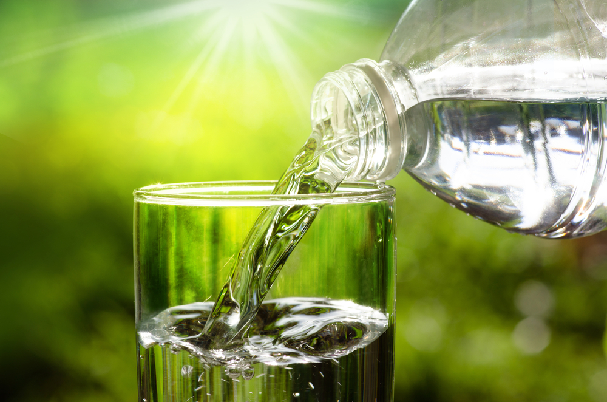

Günde en az 8 bardak su içmek için önemli neden: Sağlığınız için su için!

Sağlıklı bir erkeğin vücut ağırlığının yüzde 60’ı, sağlıklı bir kadının ise vücut ağırlığının yüzde 50’si sudan oluşur. Hepimiz suyun sağlığımız için ne kadar yararlı olduğunu biliyoruz fakat yeteri kadar su içiyor muyuz? Yetişkin bir insanın günde en az 8 bardak su içmesi gerekir. Bu sayı kişinin günlük aktivitesine, cinsiyetine ve ne kadar terlediğine bağlı olarak değişir. Yeterli su içmenin vücudumuz için yararlarını Avrasya Hastanesi’nden Beslenme ve Diyet Uzmanı Seda Dursun anlattı.
Neden su içmeliyiz?
- Su, yediğiniz besinlerin parçalanmasına yardımcı olarak sindirim sisteminin mükemmel çalışmasını sağlar,
- Cilt hücrelerini tamir ederek, cildin esnekliğini arttırır. Bu da cildin daha parlak ve daha canlı görünmesiyle sonuçlanır. Aynı zamanda saçların daha yumuşak ve parlak görünmesine yardım eder,
- Susuz kalmaya bağlı olarak gelişen unutkanlık, dikkat problemi gibi beyin fonksiyonlarını düzenler,
- Vücut ısısını dengeler ve kişilerde büyük sıkıntı veren ödemin atılmasına yardımcı olur,
- Kan dolaşımınızı kolaylaştırarak daha sağlıklı olmanızı sağlar,
- Bağırsak sağlığını düzenler
- Metabolizmayı daha fazla çalıştırır. Böylece daha fazla kalori yakmış olursunuz. Ilık su, aynı zamanda vücuttaki yağların parçalanmasını sağlar,
- Kanı sulandırır ve dolaşım sırasında pıhtılaşmasını önler,
- Stres, gerginlik ve depresyonun hafiflemesine yardımcı olur,
- Vücut direnci ve bağışıklığının güçlenmesini sağlar.
Yetişkin biri günde ortalama kaç litre su içmelidir?
Sağlıklı bir insan 1,5 litresi idrar yoluyla 1 litreye yakını ise nefes, terleme ve eklem hareketleriyle olmak üzere toplam 2,5 litreye yakın sıvı kaybeder. Kaybedilen sıvının yüzde 20’ye yakın kısmı gün boyunca yediklerimizden karşılanır. Kalan 2 litreyi de su içtiğimizde yerine koymuş oluruz. Her gün 1 bardak su ile güne başlamayı alışkanlık haline getirin. Kişilerin günlük tüketmesi gereken su miktarı yaptığı aktiviteye ve ne kadar terlediğine göre değişir. Her gün tüketilmesi gereken, evrensel olarak kabul edilmiş bir su miktarı yoktur, ancak sağlıklı miktarın ne olduğu konusunda genel bir fikir birliği vardır. Buna göre erkekler için yeterli miktar günde yaklaşık 3 litre, kadınlar için ise yaklaşık 2 litredir.
Çay, kahve suyun yerini tutmaz!
İçeceklerin hiçbiri suyun yerine geçemez. Aksine bu tür içeceklerin fazla tüketilmesi susama hissini baskılayarak, suya olan ihtiyacı azaltmaktadır. Susama hissinin olmaması vücudun günlük su ihtiyacının karşılandığı anlamına gelmez.
Su kalori içermez ve asiditesi yoktur. Kafeinli içeceklerin fazla tüketilmesi çarpıntıya neden olurken bu içeceklerin beraberinde kullanılan fazla şeker de kilo alımına neden olur.
Suyu olması gerekenden fazla tüketmek sağlığa zararlı!
Normal şartlar altında farkında olmadan gerektiğinden fazla su tüketmek nadiren gerçekleşir. Ancak her şeyin fazlasının zarar olduğunu bildiğimiz gibi suyunda fazlası zarardır. Vücut alması gerekenden fazla su aldığı takdirde kişi su zehirlenmesi yaşayabilir. Su zehirlenmesi, vücutta bulunan sıvılar içindeki elektrolitlerin dengesini bozup, normal beyin fonksiyonlarına zarar verir.
Su içmeyi eğlenceli hale getirin
- Çalışma masasında ya da evdeyken sürekli görülebilecek bir yerde renkli ve şık bir sürahi, bardak veya şişe bulundurulabilir,
- Suyun içine elma, tarçın, nane yaprağı, zencefil, çilek, üzüm gibi meyveler eklenerek lezzeti artırılabilir,
- Çalışma ortamında ve evde belirlenecek bölümlere “Su iç” yazılı notlar asılabilir,
- Ofis bilgisayarına ve cep telefonlarına su hatırlatması programları kurulabilir.